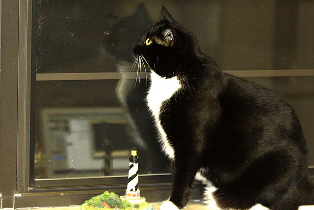

Extracting Data From HTML#
OBJECTIVES
Use
pd.read_htmlto extract data from website tablesUse
bs4to parse html returned with requests.
import requests
url = 'https://catfact.ninja/fact'
response = requests.get(url)
response
<Response [200]>
response.json()
{'fact': 'The life expectancy of cats has nearly doubled over the last fifty years.',
'length': 73}
Putting APIs Together#
Lucky for us, there is also a cat api that delivers random pictures of cats. Let’s explore the documentation here.
from IPython.display import Image
print('Cats often overract to unexpected stimuli \nbecause of their extremely sensitive nervous system.')
Image('https://cdn2.thecatapi.com/images/dia.jpg', width = 400, height = 300)
Cats often overract to unexpected stimuli
because of their extremely sensitive nervous system.
{kind=link}

#make request for random cat picture
cat_pic_url = 'https://api.thecatapi.com/v1/images/search'
pic_response = requests.get(cat_pic_url)
pic_response
<Response [200]>
#extract the url
cat_pic = pic_response.json()
cat_pic[0]['url']
'https://cdn2.thecatapi.com/images/80v.gif'
#display a random picture of a cat with a random cat fact
print(response.json()['fact'])
cat_pic = pic_response.json()
Image(cat_pic[0]['url'])
The life expectancy of cats has nearly doubled over the last fifty years.
Reading in Data from HTML Tables#
Now, we turn to one more approach in accessing data. As we’ve seen, you may have json or csv when querying a data API. Alternatively, you may receive HTML data where information is contained in tags. Below, we examine some basic html tags and their effects.
<h1>A Heading</h1>
<p>A first paragraph</p>
<p>A second paragraph</p>
<table>
<tr>
<th>Album</th>
<th>Rating</th>
</tr>
<tr>
<td>Pink Panther</td>
<td>10</td>
</tr>
</table>
import numpy as np
import pandas as pd
import matplotlib.pyplot as plt
import seaborn as sns
import requests
html = '''
<h1>A Heading</h1>
<p>A first paragraph</p>
<p>A second paragraph</p>
<table>
<tr>
<th>Album</th>
<th>Rating</th>
</tr>
<tr>
<td>Pink Panther</td>
<td>10</td>
</tr>
</table>
'''
from IPython.display import HTML
HTML(html)
A Heading
A first paragraph
A second paragraph
| Album | Rating |
|---|---|
| Pink Panther | 10 |
Making a request of a url#
Let’s begin with some basketball information from basketball-reference.com:
The tables on the page will be picked up (hopefully!) by the read_html function in pandas.
#visit the url below
url = 'https://www.basketball-reference.com/wnba'
#assign the results as data
#read_html
wnba = pd.read_html(url)
#what kind of object is data?
type(wnba)
list
#first element?
wnba[0]
| Team | W | L | W/L% | GB | |
|---|---|---|---|---|---|
| 0 | Minnesota Lynx* | 34 | 10 | 0.773 | — |
| 1 | Las Vegas Aces* | 30 | 14 | 0.682 | 4.0 |
| 2 | Atlanta Dream* | 30 | 14 | 0.682 | 4.0 |
| 3 | Phoenix Mercury* | 27 | 17 | 0.614 | 7.0 |
| 4 | New York Liberty* | 27 | 17 | 0.614 | 7.0 |
| 5 | Indiana Fever* | 24 | 20 | 0.545 | 10.0 |
| 6 | Seattle Storm* | 23 | 21 | 0.523 | 11.0 |
| 7 | Golden State Valkyries* | 23 | 21 | 0.523 | 11.0 |
| 8 | Los Angeles Sparks | 21 | 23 | 0.477 | 13.0 |
| 9 | Washington Mystics | 16 | 28 | 0.364 | 18.0 |
| 10 | Connecticut Sun | 11 | 33 | 0.250 | 23.0 |
| 11 | Chicago Sky | 10 | 34 | 0.227 | 24.0 |
| 12 | Dallas Wings | 10 | 34 | 0.227 | 24.0 |
#examine information
wnba[0].info()
<class 'pandas.core.frame.DataFrame'>
RangeIndex: 13 entries, 0 to 12
Data columns (total 5 columns):
# Column Non-Null Count Dtype
--- ------ -------------- -----
0 Team 13 non-null object
1 W 13 non-null int64
2 L 13 non-null int64
3 W/L% 13 non-null float64
4 GB 13 non-null object
dtypes: float64(1), int64(2), object(2)
memory usage: 652.0+ bytes
#last dataframe?
wnba[-1]
| Unnamed: 0 | PTS | TRB | AST | GmSc | |
|---|---|---|---|---|---|
| 0 | A'ja Wilson (LVA) | 35 | 8 | 5 | 31.8 |
| 1 | Jackie Young (LVA) | 32 | 4 | 10 | 29.6 |
| 2 | Chelsea Gray (LVA) | 17 | 2 | 6 | 18.8 |
| 3 | Odyssey Sims (IND) | 27 | 2 | 6 | 18.4 |
| 4 | Natasha Howard (IND) | 16 | 7 | 5 | 11.6 |
Example 2
List of best selling albums from Wikipedia.
url = 'https://en.wikipedia.org/wiki/List_of_best-selling_albums'
#read in the tables
pd.read_html(url)
---------------------------------------------------------------------------
HTTPError Traceback (most recent call last)
Cell In[66], line 2
1 #read in the tables
----> 2 pd.read_html(url)
File /Library/Frameworks/Python.framework/Versions/3.12/lib/python3.12/site-packages/pandas/io/html.py:1240, in read_html(io, match, flavor, header, index_col, skiprows, attrs, parse_dates, thousands, encoding, decimal, converters, na_values, keep_default_na, displayed_only, extract_links, dtype_backend, storage_options)
1224 if isinstance(io, str) and not any(
1225 [
1226 is_file_like(io),
(...)
1230 ]
1231 ):
1232 warnings.warn(
1233 "Passing literal html to 'read_html' is deprecated and "
1234 "will be removed in a future version. To read from a "
(...)
1237 stacklevel=find_stack_level(),
1238 )
-> 1240 return _parse(
1241 flavor=flavor,
1242 io=io,
1243 match=match,
1244 header=header,
1245 index_col=index_col,
1246 skiprows=skiprows,
1247 parse_dates=parse_dates,
1248 thousands=thousands,
1249 attrs=attrs,
1250 encoding=encoding,
1251 decimal=decimal,
1252 converters=converters,
1253 na_values=na_values,
1254 keep_default_na=keep_default_na,
1255 displayed_only=displayed_only,
1256 extract_links=extract_links,
1257 dtype_backend=dtype_backend,
1258 storage_options=storage_options,
1259 )
File /Library/Frameworks/Python.framework/Versions/3.12/lib/python3.12/site-packages/pandas/io/html.py:983, in _parse(flavor, io, match, attrs, encoding, displayed_only, extract_links, storage_options, **kwargs)
972 p = parser(
973 io,
974 compiled_match,
(...)
979 storage_options,
980 )
982 try:
--> 983 tables = p.parse_tables()
984 except ValueError as caught:
985 # if `io` is an io-like object, check if it's seekable
986 # and try to rewind it before trying the next parser
987 if hasattr(io, "seekable") and io.seekable():
File /Library/Frameworks/Python.framework/Versions/3.12/lib/python3.12/site-packages/pandas/io/html.py:249, in _HtmlFrameParser.parse_tables(self)
241 def parse_tables(self):
242 """
243 Parse and return all tables from the DOM.
244
(...)
247 list of parsed (header, body, footer) tuples from tables.
248 """
--> 249 tables = self._parse_tables(self._build_doc(), self.match, self.attrs)
250 return (self._parse_thead_tbody_tfoot(table) for table in tables)
File /Library/Frameworks/Python.framework/Versions/3.12/lib/python3.12/site-packages/pandas/io/html.py:806, in _LxmlFrameParser._build_doc(self)
804 pass
805 else:
--> 806 raise e
807 else:
808 if not hasattr(r, "text_content"):
File /Library/Frameworks/Python.framework/Versions/3.12/lib/python3.12/site-packages/pandas/io/html.py:785, in _LxmlFrameParser._build_doc(self)
783 try:
784 if is_url(self.io):
--> 785 with get_handle(
786 self.io, "r", storage_options=self.storage_options
787 ) as f:
788 r = parse(f.handle, parser=parser)
789 else:
790 # try to parse the input in the simplest way
File /Library/Frameworks/Python.framework/Versions/3.12/lib/python3.12/site-packages/pandas/io/common.py:728, in get_handle(path_or_buf, mode, encoding, compression, memory_map, is_text, errors, storage_options)
725 codecs.lookup_error(errors)
727 # open URLs
--> 728 ioargs = _get_filepath_or_buffer(
729 path_or_buf,
730 encoding=encoding,
731 compression=compression,
732 mode=mode,
733 storage_options=storage_options,
734 )
736 handle = ioargs.filepath_or_buffer
737 handles: list[BaseBuffer]
File /Library/Frameworks/Python.framework/Versions/3.12/lib/python3.12/site-packages/pandas/io/common.py:384, in _get_filepath_or_buffer(filepath_or_buffer, encoding, compression, mode, storage_options)
382 # assuming storage_options is to be interpreted as headers
383 req_info = urllib.request.Request(filepath_or_buffer, headers=storage_options)
--> 384 with urlopen(req_info) as req:
385 content_encoding = req.headers.get("Content-Encoding", None)
386 if content_encoding == "gzip":
387 # Override compression based on Content-Encoding header
File /Library/Frameworks/Python.framework/Versions/3.12/lib/python3.12/site-packages/pandas/io/common.py:289, in urlopen(*args, **kwargs)
283 """
284 Lazy-import wrapper for stdlib urlopen, as that imports a big chunk of
285 the stdlib.
286 """
287 import urllib.request
--> 289 return urllib.request.urlopen(*args, **kwargs)
File /Library/Frameworks/Python.framework/Versions/3.12/lib/python3.12/urllib/request.py:215, in urlopen(url, data, timeout, cafile, capath, cadefault, context)
213 else:
214 opener = _opener
--> 215 return opener.open(url, data, timeout)
File /Library/Frameworks/Python.framework/Versions/3.12/lib/python3.12/urllib/request.py:521, in OpenerDirector.open(self, fullurl, data, timeout)
519 for processor in self.process_response.get(protocol, []):
520 meth = getattr(processor, meth_name)
--> 521 response = meth(req, response)
523 return response
File /Library/Frameworks/Python.framework/Versions/3.12/lib/python3.12/urllib/request.py:630, in HTTPErrorProcessor.http_response(self, request, response)
627 # According to RFC 2616, "2xx" code indicates that the client's
628 # request was successfully received, understood, and accepted.
629 if not (200 <= code < 300):
--> 630 response = self.parent.error(
631 'http', request, response, code, msg, hdrs)
633 return response
File /Library/Frameworks/Python.framework/Versions/3.12/lib/python3.12/urllib/request.py:559, in OpenerDirector.error(self, proto, *args)
557 if http_err:
558 args = (dict, 'default', 'http_error_default') + orig_args
--> 559 return self._call_chain(*args)
File /Library/Frameworks/Python.framework/Versions/3.12/lib/python3.12/urllib/request.py:492, in OpenerDirector._call_chain(self, chain, kind, meth_name, *args)
490 for handler in handlers:
491 func = getattr(handler, meth_name)
--> 492 result = func(*args)
493 if result is not None:
494 return result
File /Library/Frameworks/Python.framework/Versions/3.12/lib/python3.12/urllib/request.py:639, in HTTPDefaultErrorHandler.http_error_default(self, req, fp, code, msg, hdrs)
638 def http_error_default(self, req, fp, code, msg, hdrs):
--> 639 raise HTTPError(req.full_url, code, msg, hdrs, fp)
HTTPError: HTTP Error 403: Forbidden
Scraping the Web for Data#
Sometimes the data is not formatted as an html table or pd.read_html simply doesn’t work. In these situations you can use the bs4 library and its BeautifulSoup object to parse HTML tags and extract information. First, make sure you have the library installed and can import it below.
# pip install -U bs4
from bs4 import BeautifulSoup
import requests
sample_html = '''
<h1>Music Reviews</h1>
<p>This album was awful. <strong>Score</strong>: <i class = "score">2</i></p>
<p class = "good">This album was great. <strong>Score</strong>: <i class = "score">8</i></p>
'''
# create a soup object
soup = BeautifulSoup(sample_html)
# examine the soup
soup
<html><body><h1>Music Reviews</h1>
<p>This album was awful. <strong>Score</strong>: <i class="score">2</i></p>
<p class="good">This album was great. <strong>Score</strong>: <i class="score">8</i></p>
</body></html>
# find the <p> tags
soup.find('p')
<p>This album was awful. <strong>Score</strong>: <i class="score">2</i></p>
# find the i tag
soup.find('i')
<i class="score">2</i>
# find all the i tags
soup.find_all('i')
[<i class="score">2</i>, <i class="score">8</i>]
# find all good paragraphs
soup.find('p', {'class': 'good'})
<p class="good">This album was great. <strong>Score</strong>: <i class="score">8</i></p>
Extracting Data from a URL#
Make a request.
Turn the request into soup!
url = 'https://pitchfork.com/reviews/albums/'
#make a request
r = requests.get(url)
r
<Response [200]>
#examine the text
r.text[:1000]
'<!DOCTYPE html><html lang="en-US"><head><title>New Albums & Music Reviews | Pitchfork</title><meta charSet="utf-8"/><meta content="IE=edge" http-equiv="X-UA-Compatible"/><meta name="msapplication-tap-highlight" content="no"/><meta name="viewport" content="width=device-width, initial-scale=1"/><meta name="author" content="Condé Nast"/><meta name="copyright" content="Copyright (c) Condé Nast 2025"/><meta name="description" content="Daily reviews of every important album in music"/><meta name="id" content="65ce02a52126d093a5f585e1"/><meta name="keywords" content="web"/><meta name="news_keywords" content="web"/><meta name="robots" content="index, follow, max-image-preview:large"/><meta name="content-type" content="bundle"/><meta name="parsely-post-id" content="65ce02a52126d093a5f585e1"/><meta name="parsely-metadata" content="{"description":"Daily reviews of every important album in music","image-16-9":"https://media.pitchfork.com/photos/5935a027a28a09'
#turn it into soup!
soup = BeautifulSoup(r.text)
Using Inspect#
You can inspect an items HTML code by right clicking on the item of interest and selecting inspect. Here, you will see the html tags that surround the object of interest.
For example, when writing this lesson a recent album review on pitchfork was Mustafa: Dunya. Right clicking on the image of the album cover and choosing inspect showed:

#find the img tag
rjordan = soup.find('img', {'alt': 'Through the Wall'})
#extract the url
rjordan.attrs['src']
'https://media.pitchfork.com/photos/686fda609a8ba5160e24a4f5/1:1/w_1600%2Cc_limit/Rochelle-Jordan-Through-the-Wall.jpeg'
#find all img tags
album_covers = soup.find_all('img', {'loading': 'eager'})
#explore attributes
album_covers[0].attrs
{'alt': 'Through the Wall',
'loading': 'eager',
'class': ['ResponsiveImageContainer-eNxvmU',
'cfBbTk',
'responsive-image__image'],
'src': 'https://media.pitchfork.com/photos/686fda609a8ba5160e24a4f5/1:1/w_1600%2Cc_limit/Rochelle-Jordan-Through-the-Wall.jpeg',
'data-src': 'https://media.pitchfork.com/photos/686fda609a8ba5160e24a4f5/1:1/w_1600%2Cc_limit/Rochelle-Jordan-Through-the-Wall.jpeg'}
#extract source of image url
for album in album_covers:
print(album['src'])
https://media.pitchfork.com/photos/686fda609a8ba5160e24a4f5/1:1/w_1600%2Cc_limit/Rochelle-Jordan-Through-the-Wall.jpeg
https://media.pitchfork.com/photos/68d451a69c3c6f55d4d0056c/1:1/w_1600%2Cc_limit/Olivia%2520Dean:%2520The%2520Art%2520of%2520Loving.jpg
https://media.pitchfork.com/photos/68d4592a6ed8409621157708/1:1/w_1600%2Cc_limit/crushed:%2520no%2520scope.jpg
https://media.pitchfork.com/photos/68d2e2d8e65ab6c4e53d0d3b/1:1/w_1600%2Cc_limit/Doja-Cat-Vie.jpeg
https://media.pitchfork.com/photos/68d2e2decb3272812d7f2419/1:1/w_1600%2Cc_limit/M-Sage-Tender-Wading.jpeg
https://media.pitchfork.com/photos/68d2e68641514ff7aced1edb/1:1/w_1600%2Cc_limit/Xexa-Kissom.jpeg
https://media.pitchfork.com/photos/686c9e74a532685e05d31b79/1:1/w_1600%2Cc_limit/Neko-Case-Neon-Grey-Midnight-Green.jpeg
https://media.pitchfork.com/photos/683f1d0c3fde63fa7e254a8c/1:1/w_1600%2Cc_limit/Cate-Le-Bon-Michelangelo-Dying.jpeg
https://media.pitchfork.com/photos/68d2e4248fa679692ea3b0b0/1:1/w_1600%2Cc_limit/Amanda-Shires.jpeg
https://media.pitchfork.com/photos/687e56009ed852edcd5f7228/1:1/w_1600%2Cc_limit/Mariah-Carey-Here-for-It-All.jpeg
https://media.pitchfork.com/photos/68d1476b7bb8997dae717de1/1:1/w_1600%2Cc_limit/George%2520Riley:%2520More%2520Is%2520More.jpg
https://media.pitchfork.com/photos/68d2e5014718c5f042bcafbe/1:1/w_1600%2Cc_limit/Mason-Lindahl.jpeg
https://media.pitchfork.com/photos/68d7fbc6a6193503d914ec77/1:1/w_1600%2Cc_limit/op%2520ivy%2520energy%2520new%2520art.jpg
https://media.pitchfork.com/photos/68766c20c943bb924a1e6b53/1:1/w_1600%2Cc_limit/Wilco-Jeff-Tweedy-Twilight-Override.jpeg
https://media.pitchfork.com/photos/68669e851370710946689f23/1:1/w_1600%2Cc_limit/Geese-Getting-Killed.jpeg
https://media.pitchfork.com/photos/68d19b19a56eddb6982e4426/1:1/w_1600%2Cc_limit/Piotr%2520Kurek:%2520Songs%2520and%2520Bodies.jpg
https://media.pitchfork.com/photos/68d44c0c9d1dd79e3258c0b6/1:1/w_1600%2Cc_limit/Paul%2520St.%2520Hilaire:%2520w:%2520the%2520Producers.jpg
https://media.pitchfork.com/photos/68d44a34637ffe2813534434/1:1/w_1600%2Cc_limit/O-Mika-Vainio-Sysivalo.jpeg
https://media.pitchfork.com/photos/68c074a6bafdaf4613f3d22c/1:1/w_1600%2Cc_limit/Frost-Children-SISTER.jpeg
https://media.pitchfork.com/photos/6852c7651edfe994c7a7db0d/1:1/w_1600%2Cc_limit/Mum-History-of-Silence.jpeg
https://media.pitchfork.com/photos/6859a53e91e198a6eccbcd98/1:1/w_1600%2Cc_limit/Cardi-B-AM-I-THE-DRAMA.jpeg
https://media.pitchfork.com/photos/68d14bd0dc3868310ffd06b3/1:1/w_1600%2Cc_limit/Asher%2520White:%25208%2520Tips%2520for%2520Full%2520Catastrophe%2520Living.jpg
https://media.pitchfork.com/photos/68bee55ba5288c22f081a13f/1:1/w_1600%2Cc_limit/Orcutt%2520Shelley%2520Miller:%2520Orcutt%2520Shelley%2520Miller.jpg
https://media.pitchfork.com/photos/68c1ad5e97dbecbb468adbe7/1:1/w_1600%2Cc_limit/Joanne%2520Robertson:%2520Blurrr.png
https://media.pitchfork.com/photos/682c8f2481b971ad1da21391/1:1/w_1600%2Cc_limit/Kiean-Hebden-William-Tyler.jpeg
https://media.pitchfork.com/photos/68a77f27fec645b6c01a384e/1:1/w_1600%2Cc_limit/JADE:%2520THAT%25E2%2580%2599S%2520SHOWBIZ%2520BABY!.jpg
https://media.pitchfork.com/photos/6890e9ea08ad3de9ddf6fb6d/1:1/w_1600%2Cc_limit/Joan-Shelley-Real_Warmth.jpeg
https://media.pitchfork.com/photos/68765f644babbb813247abe4/1:1/w_1600%2Cc_limit/Verses-GT.jpg
https://media.pitchfork.com/photos/68c075d979bd4731b0e3273f/1:1/w_1600%2Cc_limit/Body-Lapse.jpeg
https://media.pitchfork.com/photos/68cab8abedbc5dab7dce1e4a/1:1/w_1600%2Cc_limit/The%2520Jim%2520Carroll%2520Band:%2520Catholic%2520Boy.jpg
https://media.pitchfork.com/photos/687a63920313304cd3c6e70d/1:1/w_1600%2Cc_limit/Nine-Inch-Nails-Tron-Ares.jpeg
https://media.pitchfork.com/photos/6852c89c1a3ea782992b8d62/1:1/w_1600%2Cc_limit/Wednesday%2520-%2520Bleeds%2520_%2520Album%2520Art.jpg
https://media.pitchfork.com/photos/68404833d7208ee6aab06d45/1:1/w_1600%2Cc_limit/King-Princess-Girl-Violence.jpeg
https://media.pitchfork.com/photos/6892621938316f2937292dbb/1:1/w_1600%2Cc_limit/Anysia-Kym-Tony-Seltzer-Purity.jpg
https://media.pitchfork.com/photos/68c1a910a6e8ac9b029e57b9/1:1/w_1600%2Cc_limit/Lola%2520Young:%2520I%25E2%2580%2599m%2520Only%2520F**king%2520Myself.jpg
https://media.pitchfork.com/photos/68a77c46a06ec4bdbd5e1491/1:1/w_1600%2Cc_limit/Maruja:%2520Pain%2520to%2520Power.jpg
https://media.pitchfork.com/photos/68c94c17f9d5a6df769c784f/1:1/w_1600%2Cc_limit/Ed%2520Sheeran:%2520Play.jpg
https://media.pitchfork.com/photos/6852f9ea65a82c1ba8490c00/1:1/w_1600%2Cc_limit/Mark-William-Lewis.jpeg
https://media.pitchfork.com/photos/68befbc105b69384754e8c80/1:1/w_1600%2Cc_limit/The%2520Hidden%2520Cameras:%2520BRONTO.jpg
https://media.pitchfork.com/photos/686e94a929e130068873fcf0/1:1/w_1600%2Cc_limit/SFOPW%2520LP%2520artwork.jpg
https://media.pitchfork.com/photos/68c1a38ba4afd4fdf05c8bed/1:1/w_1600%2Cc_limit/Oli%2520XL:%2520Lick%2520The%2520Lens%2520%25E2%2580%2593%2520Pt.1.png
https://media.pitchfork.com/photos/68c1a6652d49386b8b8e64b2/1:1/w_1600%2Cc_limit/dolo2000:%2520Let%25E2%2580%2599s%2520Meet%2520at%2520Junes.jpg
https://media.pitchfork.com/photos/68bef91e81f32eb660e16ab0/1:1/w_1600%2Cc_limit/Twenty%2520One%2520Pilots:%2520Breach.jpg
https://media.pitchfork.com/photos/68a77138bb43caf8fc953fcb/1:1/w_1600%2Cc_limit/Liquid%2520Mike:%2520Hell%2520Airport.jpg
https://media.pitchfork.com/photos/68bef517e49ce4f37d3a05ee/1:1/w_1600%2Cc_limit/Ben%2520Bondy:%2520XO%2520Salt%2520Llif3.jpg
https://media.pitchfork.com/photos/68beec1205b69384754e8c6f/1:1/w_1600%2Cc_limit/Phish:%2520The%2520Siket%2520Disc.jpg
https://media.pitchfork.com/photos/68482d89999c36c34ccc2e08/1:1/w_1600%2Cc_limit/David-Byrne-Who-Is-the-Sky.jpg
https://media.pitchfork.com/photos/6890cacff483b9433490d4d1/1:1/w_1600%2Cc_limit/Algernon-Cadwallader-Trying-Not-to-Have-a-Thought.jpeg
https://media.pitchfork.com/photos/6821f3eda11fce871c49c3ab/1:1/w_1600%2Cc_limit/La-Dispute.jpg
https://media.pitchfork.com/photos/6852c76e1a3ea782992b8d60/1:1/w_1600%2Cc_limit/Titanic-Hagen.jpeg
https://media.pitchfork.com/photos/68b731c5cbf411b6502d00e7/1:1/w_1600%2Cc_limit/james-K-Friend.jpg
https://media.pitchfork.com/photos/68b7338c50a0cab53248566c/1:1/w_1600%2Cc_limit/Flur-Plunge.jpg
https://media.pitchfork.com/photos/682633ba4f74bf6d40c34788/1:1/w_1600%2Cc_limit/Jehnny-Beth.jpeg
https://media.pitchfork.com/photos/68badade8fbe73019589f955/1:1/w_1600%2Cc_limit/Justin-Bieber-SWAG-II.jpeg
https://media.pitchfork.com/photos/6878f48a81d661e77eea5194/1:1/w_1600%2Cc_limit/Blood-Orange-Essex-Honey.jpeg
https://media.pitchfork.com/photos/68b094a7603fa0ed2c61746b/1:1/w_1600%2Cc_limit/Hayley-Williams.jpeg
https://media.pitchfork.com/photos/6866ee859fae87fd8a466bef/1:1/w_1600%2Cc_limit/Hot-Chip-Joy-in-Repetition.jpeg
https://media.pitchfork.com/photos/688bd69b7a1e8d71e73dab91/1:1/w_1600%2Cc_limit/Ghostface-Killah-Supreme-Clientele-2.jpeg
https://media.pitchfork.com/photos/68a7324245bcfce3216c4b1d/1:1/w_1600%2Cc_limit/Brian%2520Dunne:%2520Clams%2520Casino.jpg
https://media.pitchfork.com/photos/6835bbf0429ed5e162f2ed7f/1:1/w_1600%2Cc_limit/Lucrecia-Dalt.jpeg
https://media.pitchfork.com/photos/682f27ddc1d38d1e62b78327/1:1/w_1600%2Cc_limit/Saint-Etienne-International.jpeg
https://media.pitchfork.com/photos/688badaabacddb7c4d838a91/1:1/w_1600%2Cc_limit/Mariah-the-Scientist-HEARTS-SOLD-SEPARATELY.jpeg
https://media.pitchfork.com/photos/68b742082aae76d47a40f11c/1:1/w_1600%2Cc_limit/Anna%2520Domino:%2520East%2520and%2520West.png
https://media.pitchfork.com/photos/688139b98aaff4180ad4544d/1:1/w_1600%2Cc_limit/Slipknot.jpeg
https://media.pitchfork.com/photos/683f114f95637f20b5cdf0e9/1:1/w_1600%2Cc_limit/Big-Thief-Double-Infinity.jpg
https://media.pitchfork.com/photos/68a735c7d078cf3ba776ef3a/1:1/w_1600%2Cc_limit/Akasha%2520System:%2520Heliocene.jpg
https://media.pitchfork.com/photos/689f50b9c118bfc3b3ae202a/1:1/w_1600%2Cc_limit/Ami%2520Taf%2520Ra:%2520The%2520Prophet%2520and%2520the%2520Madman.png
https://media.pitchfork.com/photos/68a35f97c70b2b534e826a05/1:1/w_1600%2Cc_limit/Greg-Freeman-Burnover.jpg
https://media.pitchfork.com/photos/685ac30129cd201b50714ded/1:1/w_1600%2Cc_limit/The-Beths.jpg
https://media.pitchfork.com/photos/68124556a49f61d1f367a406/1:1/w_1600%2Cc_limit/Stars-of-the-Lid.jpeg
https://media.pitchfork.com/photos/6849e175cbfa215d84092588/1:1/w_1600%2Cc_limit/Sabrina-Carpenter-Mans-Best-Friend.jpeg
https://media.pitchfork.com/photos/6848552ac2dc0460d301c16c/1:1/w_1600%2Cc_limit/Margo-Price-Hard-Headed-Woman.jpeg
https://media.pitchfork.com/photos/68a72d70a06ec4bdbd5e1486/1:1/w_1600%2Cc_limit/Ganser:%2520Animal%2520Hospital.jpg
https://media.pitchfork.com/photos/68a72f4b2a96239891aec832/1:1/w_1600%2Cc_limit/Anna%2520Tivel:%2520Animal%2520Poem.jpg
https://media.pitchfork.com/photos/68a728a9d078cf3ba776ef35/1:1/w_1600%2Cc_limit/Zach%2520Top:%2520Ain%25E2%2580%2599t%2520in%2520It%2520for%2520My%2520Health.png
https://media.pitchfork.com/photos/68a72bc389f8cb7ea039dba2/1:1/w_1600%2Cc_limit/Lathe%2520of%2520Heaven:%2520Aurora.jpg
https://media.pitchfork.com/photos/68ac81eabb97955c9378cd1f/1:1/w_1600%2Cc_limit/The%2520Tragically%2520Hip:%2520Fully%2520Completely.jpg
https://media.pitchfork.com/photos/68a4d659a7b48ce879ae8f04/1:1/w_1600%2Cc_limit/Haruomi%2520Hosono:%2520Tropical%2520Dandy.jpg
https://media.pitchfork.com/photos/68aef3d778698103426cc7ac/1:1/w_1600%2Cc_limit/DJ-Sprinkles.jpeg
https://media.pitchfork.com/photos/68ac8d42eb468428cae14d1e/1:1/w_1600%2Cc_limit/CMAT:%2520EURO-COUNTRY.jpg
https://media.pitchfork.com/photos/6826252a520d7320cb7d3c22/1:1/w_1600%2Cc_limit/Wolf-Alice-The-Clearing.jpeg
https://media.pitchfork.com/photos/68a387959412dc73833bbc3d/1:1/w_1600%2Cc_limit/Earl-Sweatshirt-Live-Laugh-Love.jpg
https://media.pitchfork.com/photos/68ac7f53bb97955c9378cd1b/1:1/w_1600%2Cc_limit/Sir%2520Chloe:%2520Swallow%2520the%2520Knife.jpg
https://media.pitchfork.com/photos/682b321c50010556cb1c24f6/1:1/w_1600%2Cc_limit/Hunx.jpeg
https://media.pitchfork.com/photos/681b8732c4b8ad702a7602bf/1:1/w_1600%2Cc_limit/Nourished-by-Time-The-Passionate-Ones.jpg
https://media.pitchfork.com/photos/689a0a99c6775ac1892dde31/1:1/w_1600%2Cc_limit/Alison%2520Goldfrapp:%2520Flux.jpg
https://media.pitchfork.com/photos/68a35df2954b5e6496a66b3a/1:1/w_1600%2Cc_limit/Kathleen-Edwards-Billionaire.jpeg
https://media.pitchfork.com/photos/684049043a7384724a09c510/1:1/w_1600%2Cc_limit/Water-From-Your-Eyes-Its-a-Beautiful-Place.jpg
https://media.pitchfork.com/photos/68a4c6fcba2250d1417e14b7/1:1/w_1600%2Cc_limit/Kaitlyn%2520Aurelia%2520Smith:%2520Gush.png
https://media.pitchfork.com/photos/68a4ce2d78e77c7ca96e19b0/1:1/w_1600%2Cc_limit/Scree:%2520August.jpg
https://media.pitchfork.com/photos/6859ef2478507ce803132849/1:1/w_1600%2Cc_limit/Mac-Demarco-Guitar.jpeg
https://media.pitchfork.com/photos/683dd2c485fcca934fd2c197/1:1/w_1600%2Cc_limit/Superchunk.jpeg
https://media.pitchfork.com/photos/6865393dc9bb2d9aba676f10/1:1/w_1600%2Cc_limit/Charley-Crockett-Dollar-a-Day.jpeg
https://media.pitchfork.com/photos/68a4bf35730cac24e9958417/1:1/w_1600%2Cc_limit/Pavement:%2520Slanted%2520and%2520Enchanted.png
https://media.pitchfork.com/photos/68a8b457cf076a3c09d8fb2f/1:1/w_1600%2Cc_limit/Skintone%2520Edition%2520Volume%25201.jpg
https://media.pitchfork.com/photos/683f48e1d57eb470256c990a/1:1/w_1600%2Cc_limit/Hand-Habits-Blue-Reminder.jpeg
# extract the genre tags
soup.find('span', {'class': 'rubric__name'}).text
'Pop/R&B'
# extract the text from the genres
genres = soup.find_all('span', {'class': 'rubric__name'})
#[i.text for i in genres]
genre_list = []
for genre in genres:
genre_list.append(genre.text)
set(genre_list)
{'Electronic',
'Experimental',
'Folk/Country',
'Jazz',
'Metal',
'Pop/R&B',
'Rap',
'Rock'}
Problem#
Head over to Quotes to Scrape and use requests and BeautifulSoup to extract and structure the quotes as a DataFrame similar to that below:
quote |
author |
tags |
|---|---|---|
The world as we have created it is a process of our thinking. It cannot be changed without changing our thinking |
Albert Einstein |
[change ,deep-thoughts, thinking, world] |
url = 'https://quotes.toscrape.com/'
r = requests.get(url)
quote_soup = BeautifulSoup(r.text)
quote_soup.find('span', {'class': 'text'})
<span class="text" itemprop="text">“The world as we have created it is a process of our thinking. It cannot be changed without changing our thinking.”</span>